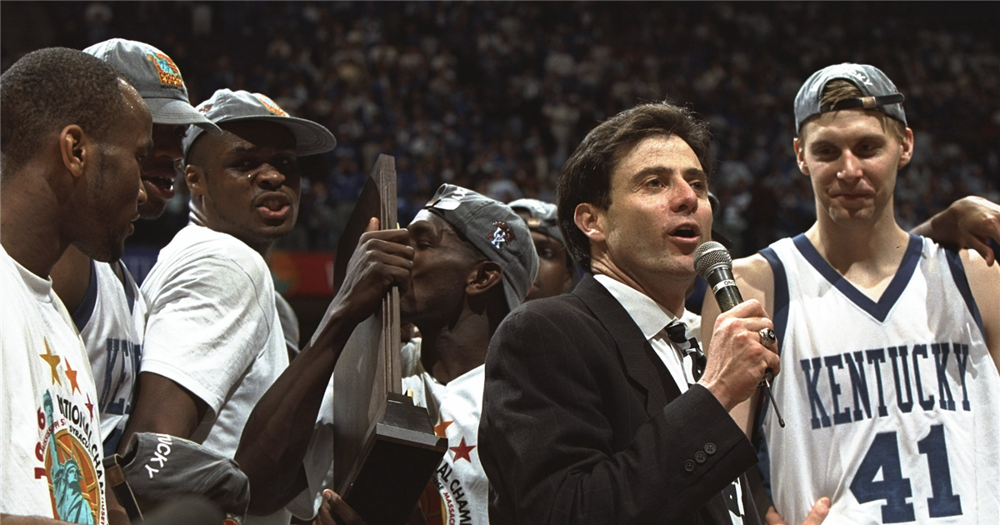

The 1995–96 Kentucky Wildcats men's basketball team represented the University of Kentucky in the 1995–96 college basketball season. Coached by Rick Pitino, the team finished the season with a 34–2 record and won the NCAA Men's Division I Basketball Championship over the Syracuse University Orangemen, 76–67.
Also known as "The Untouchables", nine players from the 95–96 team eventually played in the NBA. These players were Derek Anderson, Tony Delk, Walter McCarty, Ron Mercer, Nazr Mohammed, Mark Pope, Jeff Sheppard, Wayne Turner, and Antoine Walker. The 1995–96 Kentucky team is widely regarded as one of the greatest teams in NCAA Division I Men's Basketball history.
